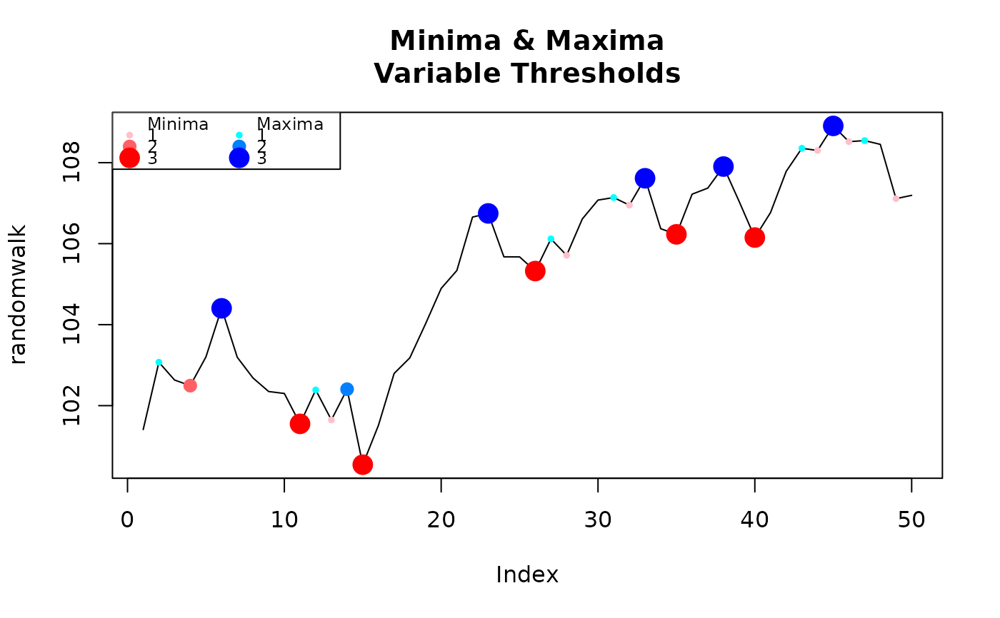

Find indices of maxima an minima in a data series
Examples
# Pick a desired threshold to plot up to
n <- 3
# Generate Data
randomwalk <- 100 + cumsum(rnorm(50, 0.2, 1)) # climbs upwards most of the time
bottoms <- lapply(1:n, function(x) inflect(randomwalk, threshold = x)$minima)
tops <- lapply(1:n, function(x) inflect(randomwalk, threshold = x)$maxima)
# Color functions
cf.1 <- grDevices::colorRampPalette(c('pink','red'))
cf.2 <- grDevices::colorRampPalette(c('cyan','blue'))
plot(randomwalk, type = 'l', main = 'Minima & Maxima\nVariable Thresholds')
for(i in 1:n){
points(bottoms[[i]], randomwalk[bottoms[[i]]], pch = 16, col = cf.1(n)[i], cex = i/1.5)
}
for(i in 1:n){
points(tops[[i]], randomwalk[tops[[i]]], pch = 16, col = cf.2(n)[i], cex = i/1.5)
}
legend('topleft', legend = c('Minima',1:n,'Maxima',1:n),
pch = rep(c(NA, rep(16,n)), 2), col = c(1, cf.1(n),1, cf.2(n)),
pt.cex = c(rep(c(1, c(1:n) / 1.5), 2)), cex = .75, ncol = 2)
